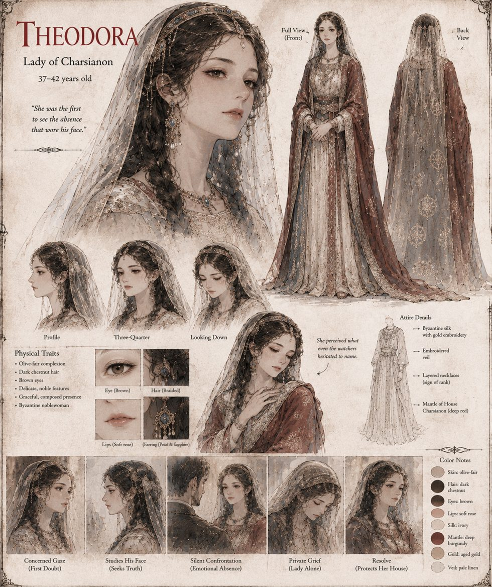

Theodora
Lady of Charsianon · 37–42 years old
Wife of Bardas for eleven years, and the first to catalogue what the cave took: the three tuneless notes he no longer hums over correspondence, the hand he no longer reaches for beneath the table. Asked whether he missed her, he answers that he felt no distress at all, and she makes it as far as the corridor before her body stops consulting her. She tests him once more, with the barn at Psychrolimne and a storm, and he recalls every fact but the cloak.
When Brother Ignatios comes to console her and in fact to depose her, she gives him an answer that is true only in the narrow sense that a ledger entry can be. Her husband makes the last choice without asking her; she never remarries, and afterward keeps Charsianon's books herself, to his old standard.
Appears In

Related Subjects


Related Records

Theodora makes it as far as the corridor before her body stops consulting her.